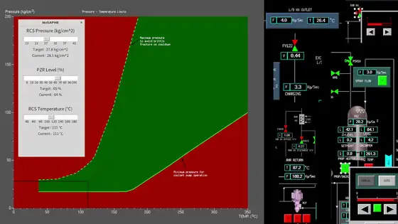

O · Operations
Operator Support Systems 운전원 지원 시스템
Helping crews see where the plant is heading — and act on it.
발전소가 어디로 향하는지 보고, 그에 맞게 대응할 수 있도록 운전원을 돕습니다.
As main control rooms go digital, AI opens a new route to operator support — especially for advanced reactors, where one crew may face multiple modules and remote siting. We build models that predict how plant parameters will evolve after an operator action, check actions before they are taken, diagnose abnormal events, and learn control strategies for autonomous operation.
주제어실이 디지털화되면서 AI는 운전원 지원의 새로운 길을 열고 있습니다. 특히 한 운전조가 여러 모듈을 맡거나 원격 운전이 이루어질 수 있는 차세대 원자로에서 그 필요성이 큽니다. 저희는 운전원 조치 이후 발전소 변수가 어떻게 변할지 예측하고, 조치를 실행하기 전에 검증하며, 비정상 사건을 진단하고, 자율운전을 위한 제어 전략을 학습하는 모델을 개발합니다.
- Parameter trend prediction
- Operation validation
- Abnormal event diagnosis
- Deep reinforcement learning
- Advanced reactors
